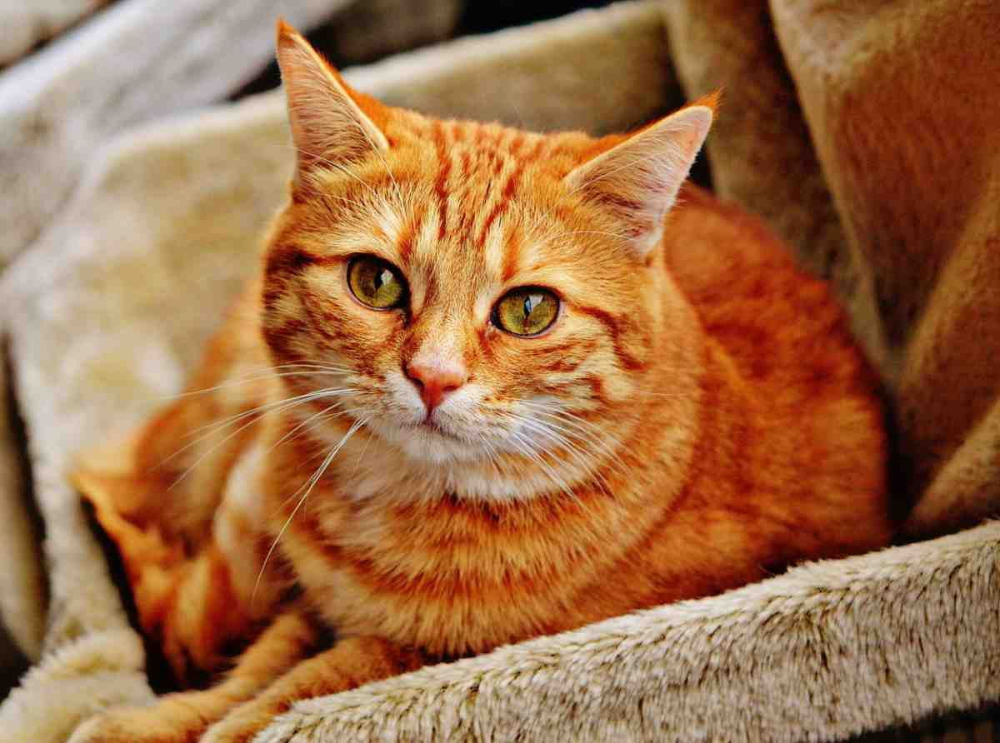

Interagisci con gli animali!
1. Doppio click sull'immagine per cambiarla

2. Passa il mouse sul paragrafo
Passa il mouse per vedere un messaggio
3. Premi il pulsante
Cliccami
4. Seleziona il tuo animale preferito:
Elefante
Delfino
Piccione
Giraffa
5. Scegli la tua categoria preferita: